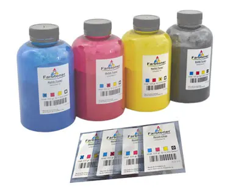

Nạp Mực In Quận Bình Tân | Thay Mực In Tại Nhà 24/7
Nạp mực máy in quận bình tân
TRUNG TÂM MỰC IN HI-TECH
Bơm Mực In Tại nhà Quận Bình Tân- cửa hàng nạp mực máy in nhanh Nhất
Điện Thoại : 089 886 9964 - zALO : 0934 39 35 50
Bơm mực máy in tại quận bình tân
Công ty Nạp mực máy in quận bình tân cam kết : Nhanh Nhất – Rẻ Nhất – Chất Lượng Nhất. dịch vụ bơm mực in quận bình tân uy tín, tới nhanh nhất chỉ 20 phút

► Kỹ Thuật Viên Luôn Túc Trực Tại Đường LÊ VĂN QUỚI. Tới nhanh nhất chỉ 20'
► Cần Nạp mực máy in tại bình tân. Cho Hitech mã số máy in và địa chỉ. Kỹ thuật viên mực in sẻ đến ngay
► Mực In Japan chất lượng cao, bản in đậm đẹp. Tới nhanh - Uy tín tại quận Bình Tân
Bơm Mực Máy In Quận Bình Tân
- Kiểm tra, sửa chữa, cài đặt phần mềm máy in, máy fax
- Nạp mực máy in laser trắng đen: Hp, Canon, Brother, Samsung...
- Nạp mực máy in laser màu : HP, Canon, Brother......
- Đổ mực máy in phun màu tận nơi: HP, Canon, Epson...
- Thay thế linh kiện máy in, mực in chính hãng, giá rẻ
- Đổ mực máy in chất lượng, kiểm tra sự cố máy in, máy fax...
- Dịch vụ vệ sinh mực in, máy in tận nơi Tp.HCM
- Bơm mực máy in tại quận Bình Tân
Với đội ngũ kỹ thuật viên nhiều năm kinh nghiêm, tay nghề cao, luôn túc trực tại quận bình tân. vậy nên khi cần nạp mực in quận bình tân. kỹ thuật viên sẻ đến ngay chỉ 20'
Cửa hàng bơm mực in quận bình tân - nhận nạp mực tận nơi công ty, doanh nghiệp, thay mực in tại nhà quận bình tân giá rẻ. kỹ thuật vên tay nghề cao. Tới nhanh nhất quận bình tân. bơm mực in có bảo hành uy tín
Công ty nạp mực in quận bình tân Giá Rẻ
- Công ty bơm mực máy in tận nơi quận bình tân
- Nạp mực máy in tại nhà Q bình tân
- Sửa máy in nhanh nhất ở quận bình tân
- Nạp mực máy in có xuất hóa đơn vat đầy đủ
- Hỗ trợ - tư vấn miễn phí qua teamviewer, zalo
- Có mặt nhanh nhất, tiết kiệm chi phí doanh nghiệp
- Hỗ trợ công nợ cuối tháng với công ty, doanh nghiệp
- Hi-Tech luôn làm việc thứ 7, chủ nhật và ngày nghĩ lễ
Khi quý khách hàng có nhu cầu cần Nạp mực in quận bình tân. Hãy liên hệ : 0898869964 hoặc nhắn tin Zalo : 0934 39 35 50. kỹ thuật viên sẻ đến ngay

Dịch vụ bơm mực máy in quận bình tân, có mặt siêu tốc

Nạp mực máy in tại nhà quận bình tân, giá rẻ nhất. Thay tất cả các loại mực như: hp, canon, samsung, brother, panasonic, Konica Minota, epson, máy in màu ...
Kỹ thuật viên đông đảo, luôn túc trực tại quận bình tân. khi quý khách hàng gọi, kỹ thuật viên bơm mực máy in quận bình tân sẻ đến nhanh nhất chỉ 20'
Hỗ trợ công nợ tối đa với khách hàng doanh nghiệp, công ty. Nhận thanh toán vào cuối mỗi tháng. nạp mực in quận bình tân có xuất hóa đơn VAT đầy đủ
Hướng dẫn sửa dụng, cài đặt máy in miễn phí qua teamviewer, zalo, điện thoại ...
Dịch vụ thay mực máy in quận bình tân làm việc tất cả các ngày trong tuần, kể cả thứ 7, chủ nhật và ngày nghĩ lễ, công ty nạp mực buổi tối tại quận bình tân
Các dịch vụ tin học khác.
- Sửa máy tính tại nhà quận bình tân
- Sửa máy in giá rẻ.
- Nạp mực máy in màu chất lượng
- Lắp đặt mạng văn phòng.
- Lắp đặt tổng đài điện thoại
- Thi công hệ thống mạng văn phòng
Bảng Giá Nạp Mực In Quận Bình Tân
Bơm mực máy in quận bình tân cam kết Uy Tín - Giá rẻ
- Bơm mực máy in canon tại nhà nhanh chóng thỉ từ 15 - 30 phút
- Mực in đảm bảo tương thích với các dòng máy in
- Chất lượng bản in sắt net
- Thay muc in quan binh tan uy tin
1. Lựa chọn mực theo đúng hãng máy in
2. Tháo các bộ phận của hộp mực
3. Làm vệ sinh ố hút sạch bụi, dò các hư hỏng hao mòn của các bộ phận.
4. Hút sạch mực thừa
5. Lắp ráp các chi tiết đã làm sạch
6. Đổ mực mới
7. Reser hộp mực nếu cần
8. In test để kiểm tra chất lượng
9. Bảo dưỡng máy miễn phí trước khi thay, đổ mực máy in
10 Tư vấn về mực máy in, giao, thay và đổ mực tại địa điểm khách hàng yêu cầu
11. Hỗ trợ bảo hành đến hết mực trong máy.
Các dịch vụ liên quan đến nạp mực máy in tận nơi
+ Nạp mực máy in cho các dòng máy HP, Canon, Samsung, Epson, Brother, Lexmark, Xerox...
+ Sửa chữa tất cả các lỗi máy in như: kẹt giấy, in mờ, không load giấy ...
+ Bơm mực cho các dòng máy in phun.
+ Lắp đặt hệ thống mực in liên tục.
+ Thay film máy fax, sửa chữa máy scan, photo...
+ Cung cấp linh kiện máy in chính hãng: Trống in, gạt mực, drum máy in
+ Cung cấp hộp mực chính hãng
+ Reset chip mực in
+ Các giải pháp về in ấn
+ Mua bán, trao đổi linh kiện máy in, mực in, máy in chính hãng
Dịch vụ bơm mực máy in nhanh tại quận bình tân - khi bạn càn gấp <>
xem thêm: địa chỉ bơm mực in quận phú nhuận
- Đổ mực máy in HP M402d/ M403/ M401
- Đổ mực máy in HP M102/ M104/ M130
- Thay Băng mực máy in Kim Epson LQ 300, 310, 2190 ..
- Cửa hàng bơm mực máy in quận bình tân nhanh nhất
- Công ty nạp mực máy in quận bình tân có xuất hóa đơn VAT
- Nơi bán hộp mực máy in quận bình tân
HƯỚNG DẪN CÁCH BƠM MỰC MÁY IN HP M435/ M 436

Giá Nạp mực máy in quận bình tân ?
- Nạp mực máy in Hp : 90k
- Bơm mực máy in Canon : 90k
- Nạp mực máy in samsung : 120k
- Thay mực in quận bình tân Brother: 140k
- Nạp mực máy in Panasonic: 150k
- Bơm mực in quận bình tân Ricoh: 150k
► Hướng dẫn reset máy in phun canon
► Sửa lỗi máy in in ra toàn giấy trắng
Tags: mua hộp mực máy in quận tân bình, nạp mực in gần quận tân bình, nơi bơm mực máy in quận tân bình, công ty thay mực in giá rẻ tân bình, cửa hàng thay mực in tân binh
Từ khóa liên quan:
bơm mực máy in giá rẻ bình tân , nạp mực in quận bình tân, thay muc in binh tan, đổ mực in bình tân, nạp mực máy in màu quận bình tân, công ty bơm mực máy in quận bình tân, dịch vụ thay mực in quận bình tân, Bơm mực máy in gần bình tân
http://www.tinhocht.com/home/nap-muc-may-in-quan-binh-tan
Địa bàn nhận nạp mực máy in tại Quận Bình Tân
Từ cửa hàng ở 79 Bắc Hải (Quận 10) sang Quận Bình Tân khoảng 9,5 km, kỹ thuật chạy mất chừng 22 phút. Đây là quãng đường đi lại hằng ngày nên khách gọi buổi sáng thường được nhận trong buổi.
Kỹ thuật nhận việc trên khắp các tuyến Kinh Dương Vương, Tên Lửa, Hồ Học Lãm, Vành Đai Trong, Mã Lò, Tân Kỳ Tân Quý và Quốc lộ 1A cùng những khu vực lân cận. Khách ở quanh Aeon Mall Bình Tân, Bến xe Miền Tây, Khu công nghiệp Tân Tạo, chợ Bà Hom và khu Tên Lửa là nhóm gọi thường xuyên nhất, phần lớn là văn phòng, cửa hàng photo và hộ kinh doanh in hoá đơn mỗi ngày.
Nhà hoặc công ty nằm trong hẻm, trên tầng cao hay trong toà nhà văn phòng đều nhận bình thường, không tính thêm phí. Máy đặt ở đâu thì bơm mực ngay tại đó, không cần tháo máy mang đi.
Giá nạp mực máy in bao nhiêu tiền?
Bảng giá áp dụng tại TP.HCM, đã gồm công đến tận nơi — không phụ thu phí đi lại:
| Loại máy in | Giá nạp mực |
|---|---|
| HPLaser trắng đen | 90.000VNĐ / lần nạp |
| HPLaser màu | 300.000VNĐ / lần nạp |
| CanonLaser trắng đen | 90.000VNĐ / lần nạp |
| CanonLaser màu | 300.000VNĐ / lần nạp |
| BrotherLaser trắng đen | 140.000VNĐ / lần nạp |
| SamsungLaser trắng đen | 120.000VNĐ / lần nạp |
| PanasonicLaser trắng đen (máy in – fax) | 150.000VNĐ / lần nạp |
| XeroxLaser trắng đen | 120.000VNĐ / lần nạp |
| Epson · Canon · HP · BrotherMáy in phun màu | 90.000VNĐ / lần nạp |
- Giá trên đã bao gồm công nạp mực tận nơi trong nội thành TP.HCM — không phụ thu phí đi lại.
- Bảo hành đến hết mực nếu bản in bị lỗi sau khi nạp.
Câu hỏi thường gặp khi nạp mực máy in Quận Bình Tân
Bảo hành sau khi nạp mực thế nào?
Bảo hành đến khi hết hộp mực. Trong thời gian đó bản in bị mờ, lem hay sọc thì gọi lại, kỹ thuật quay lại xử lý miễn phí.
Bao lâu thì có kỹ thuật tới Quận Bình Tân?
Trong giờ hành chính thường 20–30 phút kể từ lúc gọi, vì luôn có kỹ thuật trực sẵn ở khu vực Quận Bình Tân và Quận 6 và Quận 8. Giờ cao điểm hoặc trời mưa có thể lâu hơn khoảng 15 phút.
Nạp mực máy in ở Quận Bình Tân giá bao nhiêu?
Máy in laser trắng đen 90.000đ, laser màu 300.000đ, máy in phun 90.000đ — giá đã gồm công tới tận nơi trong Quận Bình Tân, không phụ thu phí đi lại. Máy cần thay thêm linh kiện thì báo giá trước khi làm.
Khu vực nào trong Quận Bình Tân được nhận nạp mực tận nơi?
Toàn bộ Quận Bình Tân, gồm các tuyến Kinh Dương Vương, Tên Lửa, Hồ Học Lãm, Vành Đai Trong và vùng quanh Aeon Mall Bình Tân, Bến xe Miền Tây, Khu công nghiệp Tân Tạo. Nhà trong hẻm hay văn phòng trên tầng cao đều nhận, không tính thêm phí đi lại.
Nạp mực máy in ở khu vực gần Quận Bình Tân
Kỹ thuật phụ trách Quận Bình Tân cũng nhận việc ở các quận sát bên. Nhà hoặc công ty nằm ở ranh giới thì bấm vào khu vực gần mình nhất để xem giá và thời gian có mặt:
Xem thêm trong mục này
- Nạp mực in đường lê văn quới bình tânUy tín - Chất lượng - Chuyên nghiệp - Với giá cạnh tranh nhất Thời Gian Nạp Mực Chỉ 20 Phút Chúng tôi cam kết …
- Nạp Mực In Quận Bình Tân HiTechCông Ty bơm mực in quận bình tân hitech : chuyên nạp mực máy in tại nhà quận bình tân, sửa máy in quận bình tâ…
- Nạp Mực Máy In Brother Tại Quận Bình TânCông Ty Bơm Mực Máy In Brother Tận Nơi Quận Bình Tân Công ty mực in HiTech chuyên: bơm mực máy in brother các …
- Nap mực máy in đường tên lửa quận bình tânNạp mực máy in đường tên lửa Trung tâm mực in Hi-Tech chuyên: bơm mực máy in đường tên lửa quận bình tân. Cửa …